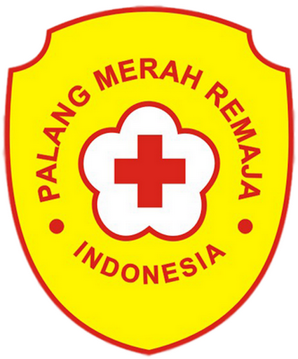

Home/Portofolio

| Tahun | Jabatan | Kegiatan |
|---|---|---|
| 2017 | Anggota | Mempelajari materi dasar Palang Merah |
| 2018 | Wakil Koordindinator | Membantu mengkoordinir perlengkapan |
| 2019 | Sie Persahabatan | Menjalin Kerjasama |
| Tahun | Jabatan | Kegiatan |
|---|---|---|
| 2020 | Staff Ahli Seni | Menjadi wadah mahasiswa fakultas menyalurkan bakat seninya |
| Tahun | Jabatan | Kegiatan |
|---|---|---|
| 2021 | CO Perkabaran Injil | Mmengkoordinir 60 kelompok tumbuh bersama |
| 2022 | Anggota imakriser | Mengikuti Kegiatan-tegiatan Imakris |